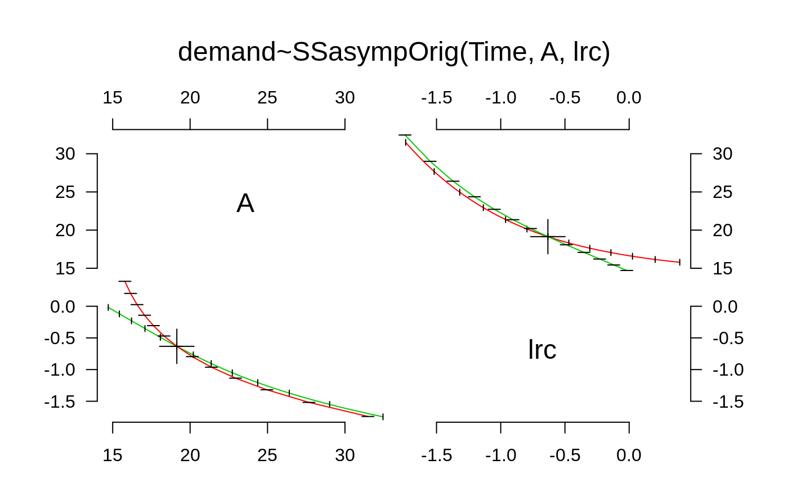
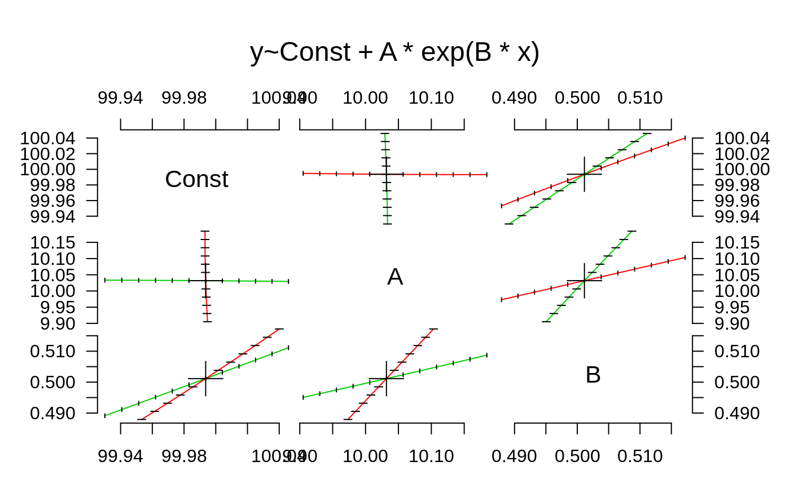

plot.profile.Rd# S3 method for profile plot(x, ...) # S3 method for profile pairs(x, colours = 2:3, ...)
| x | an object inheriting from class |
|---|---|
| colours | Colours to be used for the mean curves conditional on
|
| ... | arguments passed to or from other methods. |
This is the main plot method for objects created by
profile.glm. It can also be called on objects created
by profile.nls, but they have a specific method,
plot.profile.nls.
The pairs method shows, for each pair of parameters x and
y, two curves intersecting at the maximum likelihood estimate, which
give the loci of the points at which the tangents to the contours of
the bivariate profile likelihood become vertical and horizontal,
respectively. In the case of an exactly bivariate normal profile
likelihood, these two curves would be straight lines giving the
conditional means of y|x and x|y, and the contours would be exactly
elliptical.
## see ?profile.glm for an example using glm fits. ## a version of example(profile.nls) from R >= 2.8.0 fm1 <- nls(demand ~ SSasympOrig(Time, A, lrc), data = BOD) pr1 <- profile(fm1, alpha = 0.1) MASS:::plot.profile(pr1)## an example from ?nls x <- -(1:100)/10 y <- 100 + 10 * exp(x / 2) + rnorm(x)/10 nlmod <- nls(y ~ Const + A * exp(B * x), start=list(Const=100, A=10, B=1)) pairs(profile(nlmod))